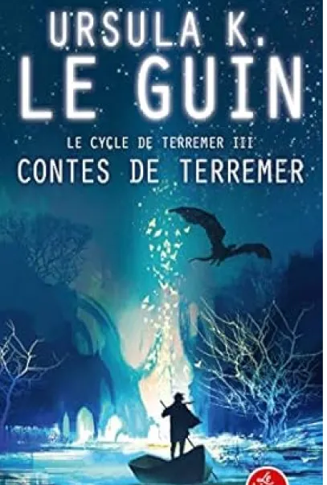

Bibliographie
4 Livres qui pourrait vous plaire
1967
"La Tombe des lucioles" par Akiyuki Nosaka
Une nouvelle poignante sur la survie d'un frère et d'une sœur dans le Japon en guerre.
1982

“Nausicaä de la vallée du vent, tome 1” par Hayao Miyazaki
Un manga incontournable pour tous les fans de science-fiction. Avc une histoire épique, écologique et humaniste, précurseure de l'œuvre de Miyazaki.
1989
"Le Château de Hurle" par Diana Wynne Jones
Le roman sur lequel le film "Le Château ambulant" de Ghibli est basé. Il est rempli de magie, de châteaux volants et de personnages fascinants.
1993
"Terremer, tome 3 : L'ultime rivage” par Ursula K. Le Guin
Roman sur un voyage initiatique qui explore les thèmes de la croissance, de la responsabilité et de l'équilibre.
Lire l’article film : Kiki la petite sorcière

Lire l’article livre: Kiki la petite sorcière